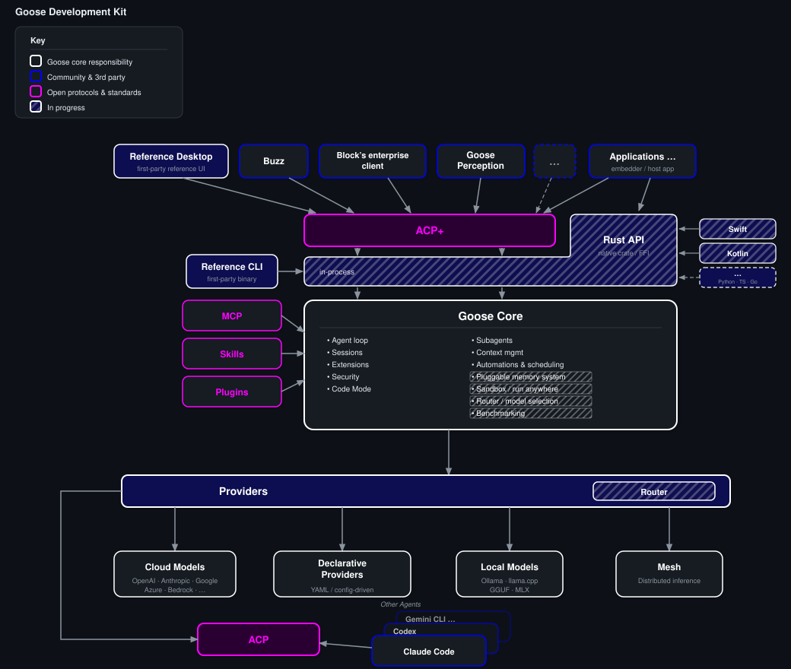

The Goose
SDK.
Goose is a single compiled binary — agent runtime, model access, tool execution, extensions, sessions — all included.
The SDK lets you embed it, connect to it, and extend it. Build your experience; let Goose handle the hard parts.
Months of plumbing, or a single import.
Most teams spend a quarter wiring up infrastructure before they ship a single agent feature. The SDK shortens that to an afternoon.
The long road
- Wire up LLM providers — auth, streaming, retries, fallbacks
- Build session management, context windows, compaction
- Implement tool execution, sandboxing, permissions, security
- Write your own extension and plugin system
- Handle model switching, cost tracking, cancellation
The short one
- All providers — Anthropic, OpenAI, Bedrock, Databricks, xAI, Groq, Ollama, llama.cpp…
- Security — prompt injection detection, tool permissions, malware checks
- Context management — auto-compaction, token counting, cost tracking
- Extensions — MCP + rMCP, Skills, Recipes, lifecycle hooks
- Sub-agents, scheduling, sandboxed execution
One compiled binary. brew, npm, apt, rpm, Docker, or a single download.
What is inside the binary.

Frontends connect via ACP+. A Rust API and language bindings open the kernel of the agent; Sprout shows what a third-party app looks like on top. Striped boxes are in flight.
The motion of the machine.

Inference, tool call, execute, respond — repeat. The application layer intercepts at every stage.
How it works.
A single binary
Compiled Rust. Acquire it however you prefer:
brew install block-goose-clinpm install @aaif/goose-sdkapt/rpm/.deb/.flatpak- Docker, MSI, NSIS, curl script
- Built-in
goose update
One protocol, three pipes
- Stdio — spawn
goose acp, pipe JSON - WebSocket — connect to a running server
- HTTP + SSE — for web services
Daemon, child process, or CLI tool — your app connects and sends prompts.
JSON-RPC, refined
The "+" denotes Goose's extensions to the open ACP standard:
- Provider & model management
- Extension hot-loading
- Config & secrets
- Session export & import
A full agent, in twenty lines.
import { spawn } from "node:child_process";
import { Readable, Writable } from "node:stream";
import { ndJsonStream, PROTOCOL_VERSION } from "@agentclientprotocol/sdk";
import { GooseClient } from "@aaif/goose-sdk";
import { resolveGooseBinary } from "@aaif/goose-sdk/node";
// 1. Spawn the goose binary
const proc = spawn(resolveGooseBinary(), ["acp"], { stdio: ["pipe", "pipe", "ignore"] });
const stream = ndJsonStream(Writable.toWeb(proc.stdin!), Readable.toWeb(proc.stdout!));
// 2. Create the client
const client = new GooseClient(() => ({
sessionUpdate: async (p) => {
if (p.update.sessionUpdate === "agent_message_chunk" && p.update.content.type === "text")
process.stdout.write(p.update.content.text); // stream text to your UI
},
requestPermission: async (p) => ({
outcome: { outcome: "selected", optionId: p.options[0].optionId }
}),
}), stream);
// 3. Initialize, create session, prompt
await client.initialize({ protocolVersion: PROTOCOL_VERSION, clientInfo: { name: "my-app", version: "1.0" }, clientCapabilities: {} });
const session = await client.newSession({ cwd: ".", mcpServers: [], _meta: { provider: "anthropic" } });
await client.prompt({ sessionId: session.sessionId, prompt: [{ type: "text", text: "Hello!" }] });A full agent — tool use, streaming, sessions, any LLM provider.
Three clients, three levels.
Pick the altitude that fits your app. All three sit on the same Goose Core — same agent loop, same providers, same security model. The GooseClient + @aaif/goose-sdk covers the protocol surface; the Rust API covers in-process.
Text TUI — ACP over stdio
React Ink. Spawns goose acp as a child process. Any language, any runtime; process isolation, swap versions.
- Interactive TUI & one-shot mode
- Provider onboarding flow
- ~30 lines for a minimal client
- Same pattern Claude Code & friends use
Reference Desktop — Rust API · FFI
Tauri + React. Embeds the kernel directly. Rust is the source of truth; Swift, Kotlin, and other bindings call into it via FFI. No daemon, no socket, lowest latency.
- Singleton connection with auto-reconnect
- Zustand stores, replay & live streaming
- Same crate the CLI ships with
- Mobile & desktop SDKs ride on this
goose_perception — pick either
Node.js daemon. Watches screen → updates wiki. Build an experience on top of ACP or in-process; Sprout is the first third-party Rust-API embedder.
- Multi-model: fast OCR + smart synthesis
- Sends images via ContentBlock
- Fresh sessions per task batch
- Ship your own UX, keep the engine
New in this evolution: Rust API, language bindings, and Sprout as the first third-party crate consumer.
A complete agent runtime, included.
Defence in depth
- Prompt-injection detection — pattern + ML
- Tool permissions — Auto, Approve, SmartApprove, Chat
- Malware checks — OSV before installing
- Egress / exfiltration detection
- Extension sandboxing
Memory, kept
- Auto-compaction at 80% window
- Token counting — tiktoken BPE
- Cost tracking — per-provider, cache-aware
- Session persistence — create, resume, fork, export
- Chat recall across sessions
Beyond a single loop
- Sub-agents — parallel, isolated context
- Scheduling — background & recurring tasks
- Sandboxed code execution — Docker (not started)
- Tool-loop detection
- Retry with backoff
- Benchmarking — built-in eval harness (not started)
- Model fit optimisation — pick the right model per task (not started)
A garden, not a fortress
- MCP + rMCP — local & remote tool servers, hot-loadable
- Skills — discoverable
SKILL.mdfiles, project & global - Recipes — declarative YAML agents, shareable, deeplink-able
- Lifecycle hooks — shell & HTTP at every stage (in progress)
- A2A — agent-to-agent protocol (in progress)
Every model, one surface
- Cloud — Anthropic, OpenAI, Bedrock, Databricks, xAI, Groq…
- Local — Ollama, llama.cpp, Candle
- Routing — task-aware model selection across providers (not started)
- Mesh — distributed model routing
- Claude Code — as a provider via ACP
- Observability — OpenTelemetry + Langfuse
Extension points.
Tools, on demand
Add tools at runtime via local or remote MCP servers. Goose manages the lifecycle — hot-loadable, no restart.
await client.extMethod(
"_goose/extensions/add", {
sessionId,
name: "my-tool-server",
uri: "http://localhost:8080",
}
);Policy, declared
Shell commands or HTTP calls at key lifecycle points — configured in YAML, no code changes.
- before_tool_call — block dangerous actions
- after_tool_call — audit, log, react
- post_compact — re-inject context
- on_session_start / end — setup & teardown
Procedural knowledge
Discoverable SKILL.md files with frontmatter. Project-scoped (.goose/skills/) or global (~/.agents/skills/). Loaded by the agent on demand.
Configurable agency
Recipes: declarative YAML — prompt, extensions, model, parameters. Shareable, deeplinkable, schedulable.
Sub-agents: child agents with isolated contexts for parallel workstreams.
A participant, not a walled garden.
Goose does not replace your existing stack — it consumes it. Any agent that speaks ACP becomes a tool Goose can orchestrate.
Bring your tools along
- Claude Code — available as a provider via ACP
- Any ACP-compatible agent — Goose can talk to it
- MCP servers — any language, any framework
- rMCP — remote tool servers over the network
Yours to embed
- Goose itself speaks ACP — any ACP client can drive it
- Embeddable — stdio, WebSocket, or HTTP
- CLI-friendly — pipe in, pipe out, script it
- Open protocol — no vendor lock-in
The LSP playbook — one protocol, many clients.
ACP is already open. Goose's extensions (_goose/*) follow a deliberate path to standardisation.
Today — shared infrastructure
@agentclientprotocol/sdk— TypeScript SDK (npm)sacp— Rust crate (symposium-acp)agent-client-protocol-schema— shared types (crates.io)- JSON Schema definitions for every request & response
Next — to be standardised
- Provider discovery & model listing
- Extension management — add, remove, toggle
- Config & secret management
- Session export & import
- Lifecycle hooks
Battle-tested across 3+ clients before any proposal.
Build for GooseClient today → works with any ACP agent tomorrow.
Pattern: a desktop client.
// Singleton connection with auto-reconnect
let client: GooseClient | null = null;
export async function getClient() {
if (client) return client;
const wsUrl = await invoke("get_goose_serve_url");
const stream = createWebSocketStream(wsUrl);
client = new GooseClient(() => ({
sessionUpdate: async (n) => {
notificationHandler.handle(n);
},
requestPermission: async (p) => ({
outcome: { outcome: "selected",
optionId: p.options[0].optionId },
}),
}), stream);
await client.initialize({ /* … */ });
client.closed.then(() => { client = null; });
return client;
}
export const prompt = (sid, blocks) =>
getClient().then(c =>
c.prompt({ sessionId: sid, prompt: blocks }));What this gets you
- Lazy connection — connects on first use
- Auto-reconnect — clears on close, next call reconnects
- State in Zustand — notifications route to stores
- Session replay —
loadSession()replays history
Notification → UI
switch (update.sessionUpdate) {
case "agent_message_chunk":
chatStore.append(sid, update.content); break;
case "tool_call":
chatStore.addTool(sid, update); break;
case "usage_update":
chatStore.updateUsage(sid, update); break;
}Pattern: a headless service.
// Multi-model: cheap for OCR, expensive for synthesis
async function createSession(kind: "fast"|"smart") {
const provider = kind === "fast"
? config.fastProvider : config.smartProvider;
const model = kind === "fast"
? config.fastModel : config.smartModel;
const s = await client.newSession({
cwd: wikiDir, mcpServers: [],
_meta: { provider },
});
if (model) await client.goose
.GooseSessionProviderUpdate({
sessionId: s.sessionId, provider, model,
});
return s.sessionId;
}
// Send screenshot for transcription
const sid = await createSession("fast");
await client.prompt({ sessionId: sid, prompt: [
{ type: "text", text: "Transcribe this screen" },
{ type: "image", data: screenshot.base64,
mimeType: "image/png" },
]});Key patterns
- Session-per-task — fresh batch, no context buildup
- Multi-model — different sessions, different providers
- Stream buffer — accumulate chunks, read on complete
- Images as ContentBlock — base64 alongside text
Query providers at runtime
const providers = await client.goose
.GooseProvidersDetails({});
providers.providers
.filter(p => p.isConfigured)
.forEach(p => console.log(p.name));
const models = await client.goose
.GooseProvidersModels({
providerName: "anthropic"
});Build on the agent, not around it.
Three clients prove it works. Yours could be the fourth.
Compiled Rust. Brew, npm, apt, rpm, Docker, Windows MSI, curl. Daemon, child process, or CLI.
Prompt-injection detection, tool-permission modes, malware checks, egress monitoring, sandboxed execution.
MCP + rMCP for tools. Skills for knowledge. Recipes for config. Hooks for policy. Sub-agents for parallelism.
ACP is the standard. Goose's ACP+ extensions prove out in production, then get standardised.
brew install block-goose-cli — or npm, apt, docker, curl…